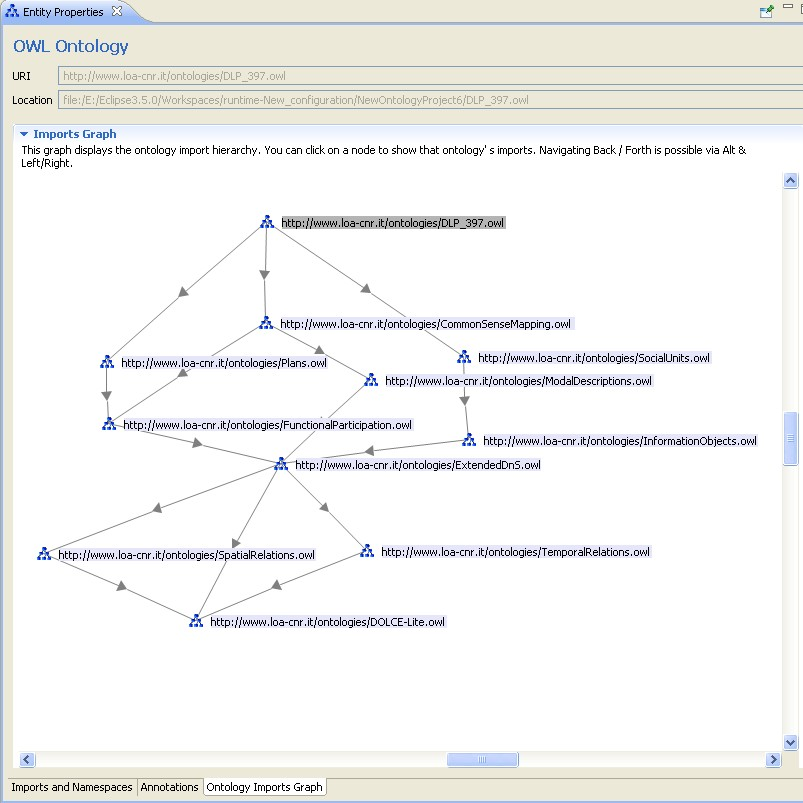

This Entity Properties panel displays general properties of an OWL ontology itself. Once you have selected an ontology in the Ontology Navigator, the Entity Properties panel will show import and namespace information of the currently selected ontology.
In the Imports section, ontologies imported by the currently selected ontology are shown. Importing another ontology brings the entire set of classes, properties, and individuals provided by that ontology into the current ontology. Importing another ontology will also import all of the ontologies that the initial ontology imports.
Usually, each ontology also has a number of namespace declaration. The namespace declaration provides convenient means to reference names defined in this or other OWL ontologies. A namespace is a string of characters that prefixes the identifiers of classes, properties, and individuals in an ontology. By maintaining shortcuts (prefixes) for the usually long namespaces it is possible to make the display of entities, expressions and axioms much easier to read. The prefixes will be used when the QName option is chosen for the Entity Label Mode
Additionally, every ontology can specify a default namespace, stating that unprefixed names refer to this namespace. You can specify the default namespace by selecting the check box in front of the namespace. Newly generated resources will then get this namespace by default.
For a description of the Annotations section please refer to How to reate an Annotation?.
In this view all ontologies that are directly or indirectly visible (via the imports relationship) from this ontology are displayed as a graph. Each ontology is represented by a node and each "import" is represented by a directed link between them. The importing ontology points to the imported one.
